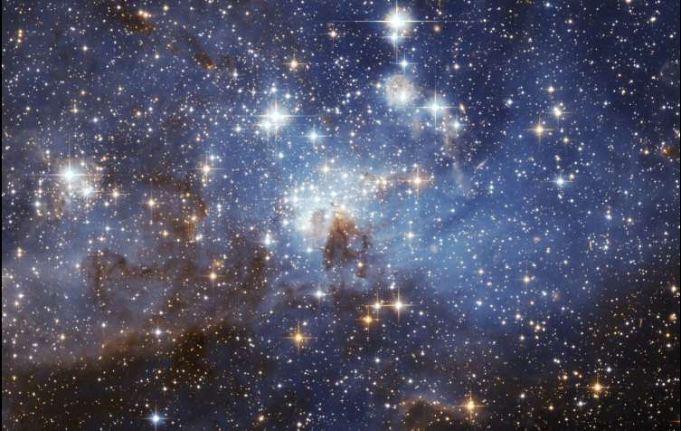

DEVELOPED BY ROBERT ZULU THE PROFESSIONAL PROGRAMMER
STARS

A star is an astronomical object consisting of a
luminous spheroid of plasma held together by its own gravity.
The nearest star to Earth is the Sun. Many other stars are
visible to the naked eye from Earth during the night, appearing
as a multitude of fixed luminous points in the sky due to
their immense distance from Earth.
Stars in the observable universe are invisible to the naked eye from Earth, including all stars outside our galaxy, the Milky Way
WHAT IS THE AGE OF STARLIGHT?
I was told that the light we see from stars is actually
5,000 years old due to the distance light has to travel to reach us.
When the star is 5,000 lightyears from Earth.
A lightyear is a measure of distance. It's how far light travels
in a year at about 186,000 mile per second. That is,
about 5.87 trillion miles.
The star nearest our Solar System, Proxima Centauri, is about four lightyear away. The light traveling from Proxima Centauri to Earth takes about four years to get here. thus, the light is for years old when we see it.
Another nearby star is Barnard's Star, which is six lightyears from Earth. It's light takes six years to get here, so that light is six years old when we see it.